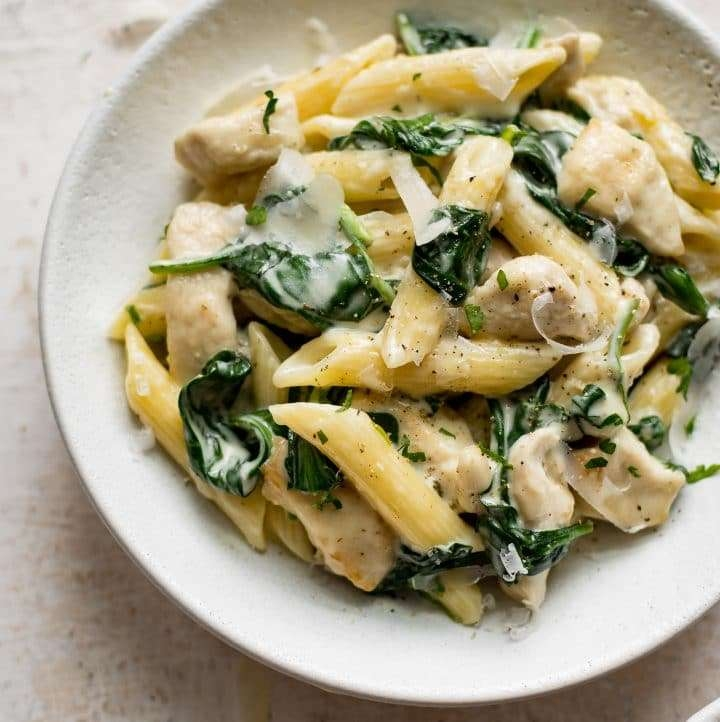

Creamy Chicken Spinach Pasta

Description
A creamy garlic chicken spinach pasta dish.
Ingredients
- 8 ounces uncooked pasta
- 2 chicken breasts cut into small pieces
- Salt & Pepper
- 1 tbsp Butter
- 1 tbsp Olive Oil
- 4 garlic cloves minced
- 1/3 cup chicken broth
- 1 tsb lemon juice
- 1/2 tsb dijon mustard
- 1 cup heavy cream
- 5 ounches baby spinach
- 1/2 cup fresh grated parmesean cheese
- Dash italian seasoning
- 5 strips bacon chopped
Steps
- Boil a large salted pot of water for the pasta. Cook according to directions
- Cut up chicken and season with salt and pepper. Coat in flour.
- Add the butter and oil to a skiller over med-high heat. Once the oan is hot add the chicken and cook until no longer pink. Once cooked set chicken aside.
- Take the pan off the heat and add the garlic, chicken broth, lemon juice, dijon mustard, italian seasoning. Return the pan to the heat and let it bubble for a minute or two. Scrape any brown bits off the bottom of the pan.
- Add the chicken, cream, and spinach to the pan. Let it cook for about 5 minutes, or until chicken is cooked through. Reduce the heat if you notice the sauce is thickening too fast.
- Drain pasta and toss with the sauce. Stir in parmesean and season with more salt and pepper as needed.